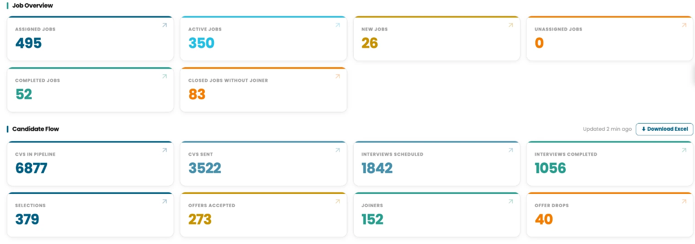
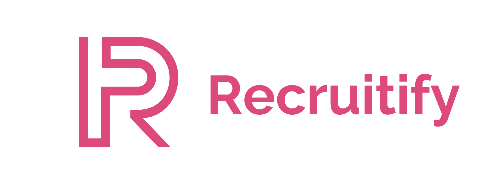
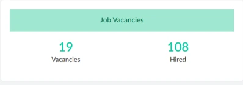
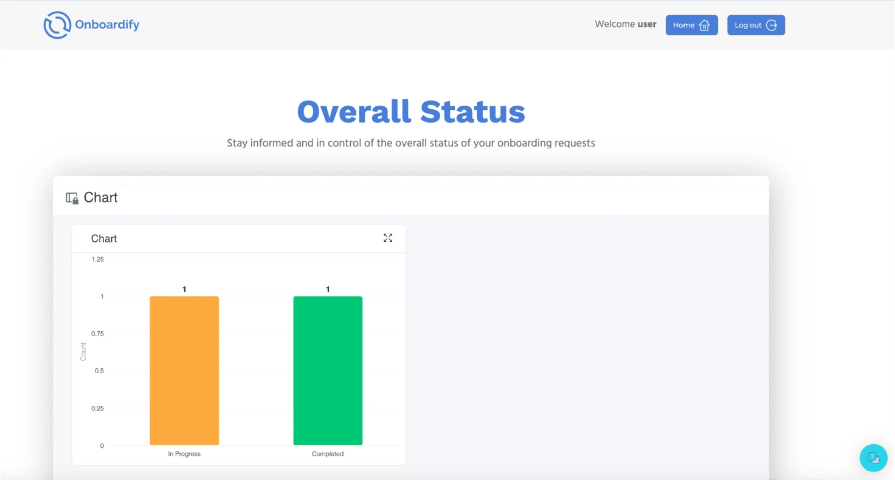

You already have an ATS
Scope the recruitment workflow, technology connections and reporting around your existing environment. Integration requirements are agreed during solution design.
TASC’s recruitment tools support the delivery team from sourcing through joining. Explore the tools supporting sourcing, screening, recruitment coordination and onboarding.
For recruitment performance and management reporting, explore the Control Tower.
Clarify role requirements and hiring priorities, supported by market information on talent supply, salary ranges and sourcing channels.
Relevant capabilities
Hyrra and talent intelligence.

Source and match candidates, manage recruitment workflows and reengage relevant talent pools.
Relevant capabilities
Hyrra, Recruitify and Nudge.


Use screening and assessment tools to support candidate evaluation. Recruiters review shortlisted candidates before submission, and the client retains final selection.
Relevant capabilities
Hyrra.
Recruiters review candidates against the role requirements before submitting a shortlist.
Coordinate offers, documents and onboarding activities within the agreed delivery scope.
Relevant capabilities
Onboardify.

Talk through your current recruitment setup, where delivery needs support and what a dedicated TASC team could take responsibility for.